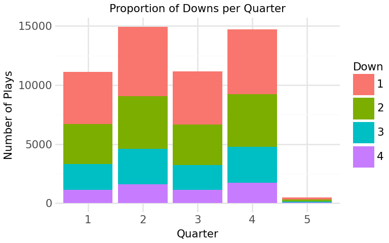
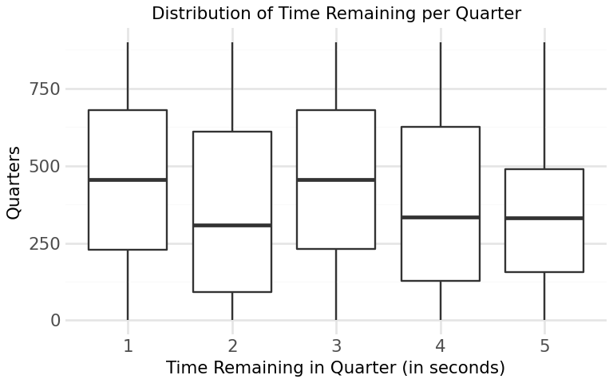
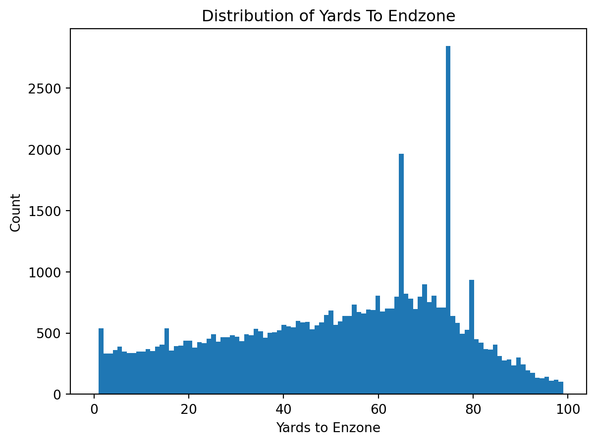
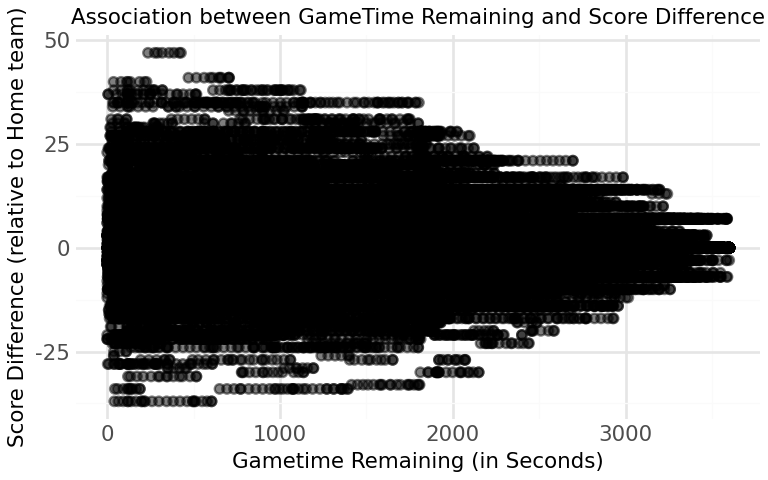
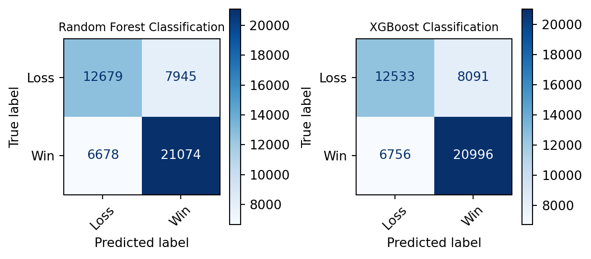
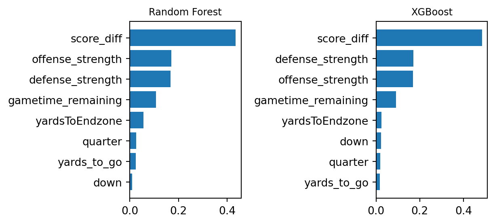

Shannon Tanoto’s Final Project
INTRODUCTION
The aim of this project is to build a machine learning model that predicts the probability that a home team is going to win an NFL (National Football League) game given a current game state (features). A game state is described by statistics of a team’s field position (yards to go, yards to endzone, yards gained), game’s time remaining (quarter, time_remaining), and the score difference(home score, away score). Another key feature is the offensive and defensive team strengths based on each team’s historical performance (offense strength and defense strength). All of these variables capture both the immediate context of the game and the relative strengths of the teams, and are leveraged by the model to predict the win probability (model’s output). A binary target outcome, whether the home team wins the game, contributes to the model training as well. The model is trained on past data to predict the win probability at any point of time in the game, which can be valuable for fans, analysts, coaches or strategists seeking to better understand the game dynamics, evaluate team performance, and support real-time decision making in sports analytics.
METHODS
Data Collection
The dataset was extracted using the ESPN Public API (https://github.com/pseudo-r/Public-ESPN-API). To start, the API was used to collect all NFL games from the 2022 and 2023 season, providing two datasets containing 336 games and 349 games respetively with 5 variables:
| Variable | Description | Type |
|---|---|---|
| id | Game ID number | String |
| name | Game’s name (teams playing) | String |
| home_team | Home team’s ID number | String |
| away_team | Away team’s ID number | String |
| date | Game’s date | String |
Table 1: Games Dataset
Next, a different endpoint of the ESPN Public API was used to retrieve play-by-play data that occurred in each game of the 2022 and 2023 season. This produced two dataset of 57,547 observations (or single plays) and 52,703 observations respectively with 13 variables:
| Variable | Description | Type |
|---|---|---|
| gid | Game ID number | Integer |
| pid | Play ID number | Integer |
| play_action | Description of the play | String |
| quarter | Quarter in which the play occurred | Integer |
| time_remaining | Time remaining in the current quarter (seconds) | Float |
| down | Down in which the play occurred | Integer |
| yards_to_go | Yards needed to get a first down | Integer |
| yardsToEndzone | Yards needed to reach the endzone | Integer |
| yards_gained | Yards gained on the play | Integer |
| home_score | Home team’s current score | Integer |
| away_score | Away team’s current score | Integer |
| offense_team | Offensive team ID | Float |
| defense_team | Defensive team ID | Float |
Table 2: Plays Dataset
Data Cleaning & Wrangling
First, notice that games dataset’s column “id” corresponds to the plays dataset’s column “gid”. However, they have different variable types, so “gid” was converted to a string, matching “id”. Since only the plays dataset was downloaded and may not align with potential API updates for the games dataset, we filter out any games that are not in the plays dataset using the “gid” set.
Next, based on the summary table of missing data, we observe that most variables in the plays dataset don’t have any missing values. The only variables with missing values are offense_team and defense_team.
Further investigation of these observations shows that these values are missing when the play occurred at the start or end of a quarter or game (indicated by variable play_action). Since these plays don’t represent standard plays, they are not relevant for our model and thus are filtered out.
Moreover, after examining the summary statistics table, we see that all variables are within the reasonable ranges:
home_score and away_score are positive (minimums are 0)
yards_gained has a range within -109 and 109 yards, which is the maximum length of a football field including the end zones
time_remaining between 0 and 900 which is 4 quarters of 15 minutes
yards_to_go and yardsToEndzone are positive and under 100 yards, reflecting the maximum possible distance of a football field
However, the summary statistics table also show a minimum values of 0 for variables: down and quarter. After examining these observations, we see that these plays corresponds to kickoffs or start of a game. Because these events don’t represent standard play, we keep entries with quarter 1,2,3,4 and 5 (representing the 4 quarters of a standard NFL game and overtime), as well as downs 1,2,3,4 (representing offensive downs)
After filtering out irrelevant data, our datasets contains 52,410 and 48,376 meaningful plays for the training (2022) and testing (2023) datasets respectively.
Feature Engineering
The target outcome for this model is a binary indicator of whether the home team wins the game. Since the dataset is rows of all plays played in the all games, we first grouped the plays per game, and find the maximum score for both the home and away team for each game. If the home team has the higher maximum score, then the tagret outcome variable, “home_wins” is set to 1 indicating tha tthe home team won. This target outcome will then be merged into the orignal plays dataset so that each row (or play) is assinged the final game outcome.
In order to better represent the state of the game, 4 additional variables were engineered from existing data:
gametime_remaining: Time remaining in the whole game (instead of time remaining in the quarter as represented as the variable time_remaning) (in seconds)
- gametime_remaining = ((4 - quarters) x 900) + time_remaining
- where each quarter consists of 900 seconds ( = 15 minutes) and for quarter = 5 (indicating overtime plays), this value is set to NULL
score_diff: Score Difference between home and away team (relative to the home team)
- score_diff = home_score - away_score
- the difference between the home team’s score and away team’s score at that time of play
offense_strength: the strength of the team currently on offense
- This value was calculated by the sum of wins / sum of games played per team
defense_strength: the strength of the team currently on defense
- This value was calculated by the sum of wins / sum of games played per team
Together, these engineered varaibles provide more context of the game, improving the model’s training to estimate the win probability.
| Variable | Description | Type |
|---|---|---|
| gid | Game ID | String |
| pid | Play ID | Integer |
| play_action | Description of play | String |
| quarter | Quarter of play | Integer |
| time_remaining | Time remaining in quarter (seconds) | Float |
| down | Current down | Integer |
| yards_to_go | Yards to first down | Integer |
| yardsToEndzone | Distance to endzone | Integer |
| yards_gained | Yards gained on play | Integer |
| home_score | Home team score | Integer |
| away_score | Away team score | Integer |
| offense_team | Offensive team ID | String |
| defense_team | Defensive team ID | String |
| gametime_remaining | Time remaining in game (seconds) | Float |
| score_diff | Home score − away score | Integer |
| home_wins | Target variable (1 = home win, 0 = loss) | Integer |
| offense_strength | Offensive team win rate | Float |
| defense_strength | Defensive team win rate | Float |
Table 3: Final Dataset
EDA
Statistics Summary of Key Variables
The summary table below shows key game statistics of 52,410 plays from the 2022 NFL season (train dataset) with each observation representing a single play including variables describing the game situation. The table confirms that all variables fall within expected ranges of a realistic game state.
| quarter | time_remaining | down | yards_to_go | yardsToEndzone | yards_gained | home_score | away_score | gametime_remaining | score_diff | home_wins | offense_strength | defense_strength | |
|---|---|---|---|---|---|---|---|---|---|---|---|---|---|
| mean | 2.59 | 407.24 | 2.02 | 8.41 | 51.36 | 5.77 | 11.72 | 10.17 | 1696.95 | 1.55 | 0.559 | 0.501 | 0.499 |
| std | 1.13 | 275.30 | 1.01 | 4.12 | 24.42 | 10.43 | 9.67 | 9.16 | 1050.37 | 9.633 | 0.497 | 0.1449 | 0.1451 |
| min | 1 | 0 | 1 | 1 | 0 | -45 | 0 | 0 | 0 | -37 | 0 | 0 | 0 |
| max | 5 | 900 | 4 | 89 | 99 | 99 | 54 | 51 | 3600 | 47 | 1 | 1 | 1 |
Table 4: Summary Table of Key Variables
Figure 1: Proportion of Downs per Quarter
This stacked bar graph displays the number of plays as well as the proportion of downs across each quarter. We can see that there are more plays occurring in second and fourth quarter which might be because teams tend to hustle as they approach a turnover or end of the game. Besides that, first and second down occurs more frequent compared to third and fourth down which is expected as they represent the start of offensive drives. Notice how there is more fourth down played in the fourth quarter compared to other quarters suggesting increased risk-taking drives attempted by teams to get more points in the limited time left. Another thing to highlight, is the low count in plays for 5th quarter as overtime don’t happen often in NFL games. Hence, these findings suggests that both downs and quarters might influence win probability and thus are added as features of the model.

Figure 2: Distribution of Time Remaining per Quarter
The distribution of time remaining within each quarter is balanced with plays occurring throughout the duration of the game. This suggests that plays are not are not concentrated in a certain time of the quarter and that our data is not skewed (it captures game states at all point in time of the game) . This is key for the model as it ensures that predictions can be made across all quarters of the game.

Figure 3: Distribution of Yards to Endzone
Field position values are distributed across the field with more plays occurring at approximately 75 yards away from the end zone where most drives often begin. The wide spread indicates that the dataset captures a diverse range of game situation at every yard of the field, ensuring that predictions can be made by the model across the field.
C:\Users\shnta\Desktop\JSC370_2026_Winter\.venv\Lib\site-packages\plotnine\layer.py:374: PlotnineWarning: geom_point : Removed 483 rows containing missing values.
Figure 4: Association between Gametime Remaining and Score Difference The association between the score difference and game time remaining seems to have a correlation where as game time decreases (game progresses), the score differences tend to increase in magnitude, reflecting the fact that games often become more decisive towards the end.
Model Building
To search for the best model to predict the probablity that the home team wins, both Random Forest classifier and the XGBoost Classifier were candidates, because: - Random Forest Classifer: this model creates decision trees by randomly creating subsets of the 8 key variables and takes the majority vote across the trees.
- XGBoost Classifier: this model creates a weak learner and slightly improves sequentially upon predictions of the previous models by focusing on the observations with the largest errorsBoth approaches improves prediction accuracy for a binary target outcome, whether the team wins (indicated by home_wins = 1) or loses (indicated by home_wins = 0) and outputs the probability of a home team win.
Training and Testing
We have two datasets: - 2022 NFL games dataset which is our training dataset - 2023 NFL games dataset which is our testing dataset
The model is trained on the training set (2022 NFL games) and will be evaluated on the testing set (2023 NFL games) to evaluate its accuracy.
Hyperparameter Tuning
To improve model performance, hyperparameters were tuned on the training set using 5-fold CV with random search. The following hyperparameters samples were considered: - Random Forest: - max_features: features per split (‘sqrt’, 1/3, 0.5) - min_samples_leaf: minimum samples or observation in each leaf (1, 5, 10)
- n_estimators: number of trees (set to 200)
- XGBoost:
- max_depth: depth of each tree (4,6,8)
- learning_rate: shrinkage per step (0.05, 0.1, 0.5)
- reg_lambda: L2 regularization (0.1, 1, 10)
- reg_alpha: L1 regularization (0, 0.1, 1)
- n_estimators: number of trees (set to 200)
Here are the best hyperaparmeter combinations found for each model: - Random Forest: - max_features: ‘sqrt’ - min_samples_leaf: 10 - n_estimators: 200
- XGBoost:
- max_depth: 6
- learning_rate: 0.05
- reg_lambda: 1
- reg_alpha: 0.1
- n_estimators: 200
Model Evaluation
After the models were rebuild with the best combinations of hyperparameter above and fit on the training data, the models were ran on the test data and their performance are evaluated using: - Accuracy: represents the model’s ability to predict wins correctly - F1-Score: represents the model’s ability to balance precision and recall - ROC-AUC: represents the model’s performance in distinguishing a win or loss across all thresholds
| Model | Test Accuracy | Misclassification Error | F1 Score | AUC |
|---|---|---|---|---|
| Random Forest | 0.698 | 0.302 | 0.742 | 0.771 |
| XGBoost | 0.693 | 0.307 | 0.739 | 0.758 |
Table 5: Model Performance Comparison
RESULTS

Figure 5: Confusion Matrices of Models The Confusion Matrices shows diagonals shows the accuracy of both models. With greater proportion of the prediction (indicated by both the larger numbers and the darker shade of blue) lies at the true values (Predicted Win & True Win, Predicted Loss & True Loss). Notice that False Positives and False Negatives counts are significantly smaller than the True values, suggestsing the high accuracy in the both models.

Figure 6: Feature Importance Graphs of Models The Feature Importance Graphs highlights the top most influential features for each model. We see both models have score difference as the more dominant variable, followed by team strengths then remaining game time. This shows that not only does game statistics influence the model, but also each team’s relative strengths contributes meaningfully.
The final selected model is the Random Forest Classifier as it has a higher accuracy (0.698 vs 0.693) along with a higher F1-score (0.742 vs 0.739), indicating better balance between percision and recall, as well as higher AUC score (0.77 vs 0.76), making it more reliable in predicting both win and loss resutls.
With Random Forest Classifier as our model, we set a specific game, the “NFL 2024 game of the San Francisco 49ers vs the Washington Commanders” to provide an example of how our model could provide valuable insights.
Figure A, the plot shows how win probability of the home team (in this case, the Commanders) evovles throughout the game. At the start of the game (right hand side of the graph), the win probability is around 0.6 which is reasonable as we know that team strength affects the prediction quite significantly. As the game progresses, game state (e.g. score difference, field positions) changes and those changes influences the model’s prediction which is reflected in the fluctuation of the graph. Towards the end of the game (closer to gametime_remaning = 0) the win probability shifts to a more extreme value (0 or 1, in this case 0). This reflects a game state with a significant score difference of -17, limited time remaining and field position far away from the end zone (difficult to score a touchdown or a field goal), indicating there isn’t much chances for the Commanders to possibly win at that game state.
Figure B highlights the difference in distrbution of predicted win probabilities among the different quarters. In the early quarters, win probabilities centers around 0.6, reflecting high uncertainty due to ample remaining time. As the game progresses, the distribution spreads out in third quarter (a more uniform distribution). Another apprarent insight is how the win probabtility in the fourth quarter concentrates in the two extreme values of 0 and 1, indicating increased certainty in game outcome as it gets closer to the end of the game and score differences becomes more influential.
Figure C illustrates the relationship between win probabiltiy and gametime remaining, highlighting the role of team’s strength difference. At the early stages of the game, there are more extreme colour (purple or yellow) points towards the extreme values of 0 or 1, suggesting how the magnitude in strength difference influences the prediction of win probability. As the game progresses, the different colour points evens out, indicating that team strength difference doesn’t influence the win probabitliy as much as early in the game.
CONCLUSION & SUMMARY
This project has developed a Random Forest Classifier Model tha predicts whether a home team will win an NFL game given the game state, and outputs the win probability at that point of the game. The most influiential features leveraged by the model are score difference, team strengths and game time remaining, as well as other less dominant features like field position also contribute in predicting the win probability.
The results shows that the model is able to produce meaningful and interpretable insights. For example, given a game state with significant negative score difference, limited time remaining and poor field position, the chances of winning are low and thus teams can take more risky plays to attempt to even out the score.
During model building, we also learn that a Random Forest Classifier performs slightly better than the XGBoost (by comparing the accuracy, F1-score and ROC-AUC). Hence, Random Forest Classifier was chosen as our final model with an accuracy of apprximately 70%.
However, there are several limitations to this method. First, the model doesn’t consider player statistics or whether they are playing or not, which can affect the offense or defense strength values, thus impacting game outcome. Besides that, the model doesn’t consider team performance against specific opponents, and there is no distinction between the offense and defense strengths beyond the overall strength value.
Further improvements would include adding more features such as players conditions, importing more hisotrical data to capture team performance against specific teams and differentiating offense and defense strengths.
To summarize, this project shows that machine learning models can effectively estimate win probability in NFL games using conditions of the game. These findings can be valuable for understanding game dynamics and supporting decision-making in sports analytics, while also providing a foundation for future improvements.